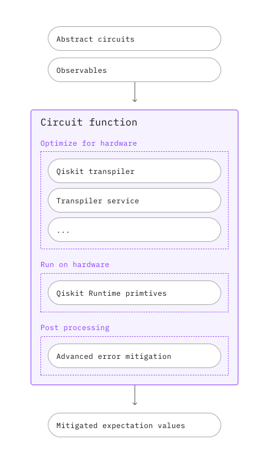

IBM Circuit function#
概要#
IBM® Circuit functionは、抽象化された PUBsを入力として受け取り、緩和された期待値を出力として返します。この Circuit functionには、研究者がアルゴリズムとアプリケーションの発見に集中できるように、自動化されカスタマイズされたパイプラインが含まれています。
説明#
PUB を送信すると、抽象化された回路とオブザーバブルが自動的にトランスパイルされ、ハードウェア上で実行され、後処理されて緩和された期待値が返されます。これを行うには、次のツールを組み合わせます：
Qiskit Transpiler Service：抽象的な回路をハードウェアに最適化された ISA 回路に変換するための AI 駆動型およびヒューリスティックなトランスパイル パスの自動選択が含まれます。
ユーティリティ・スケールの計算に必要なエラー抑制と緩和 ：測定とゲートのトワリング、動的デカップリング、トワリング読み出しエラー消滅（TREX）、ゼロ・ノイズ外挿（ZNE）、確率的エラー増幅（PEA）などを含む
Qiskit Runtime Estimator：ハードウェア上でISA PUBを実行し、緩和された期待値を返す。

始めましょう#
IBM Quantum Platform API tokenを使用して認証し、次のように Qiskit Functionを選択します。
from qiskit_ibm_catalog import QiskitFunctionsCatalog
catalog = QiskitFunctionsCatalog()
function = catalog.load("ibm/circuit-function")
例#
まず、次の基本的な例を試してください。
from qiskit.circuit.random import random_circuit
from qiskit_ibm_runtime import QiskitRuntimeService
# You can skip this step if you have a target backend, e.g.
# backend_name = "ibm_sherbrooke"
# You'll need to specify the credentials when initializing QiskitRuntimeService, if they were not previously saved.
service = QiskitRuntimeService()
backend = service.least_busy(operational=True, simulator=False)
circuit = random_circuit(num_qubits=2, depth=2, seed=42)
observable = "Z" * circuit.num_qubits
pubs = [(circuit, observable)]
job = function.run(
backend_name=backend.name, # Or `backend=backend_name`, if you didn't initialize a backend object
pubs=pubs
)
Qiskit Functionワークロードのstatus を確認するか、次のようにresultsを返します。
print(job.status())
DONE
result = job.result()
DONE
結果はEstimator resultと同じ形式になります。
print(f'The result of the submitted job had {len(result)} PUB\n')
print(f'The associated PubResult of this job has the following DataBins:\n {result[0].data}\n')
print(f'And this DataBin has attributes: {result[0].data.keys()}')
print(f'The expectation values measured from this PUB are: \n{result[0].data.evs}')
The result of the submitted job had 1 PUB
The associated PubResult of this job has the following DataBins:
DataBin(evs=np.ndarray(<shape=(), dtype=float64>), stds=np.ndarray(<shape=(), dtype=float64>), ensemble_standard_error=np.ndarray(<shape=(), dtype=float64>))
And this DataBin has attributes: dict_keys(['evs', 'stds', 'ensemble_standard_error'])
The expectation values measured from this PUB are:
0.961499493414387
入力#
IBM Circuit functionが受け入れるすべての入力パラメーターについては、次の表を参照してください。後続のOptionsセクションでは、使用可能なoptions についてさらに詳しく説明します。
Name |
Type |
Description |
Required |
Default |
Example |
|---|---|---|---|---|---|
backend_name |
str |
Name of the backend to make the query. |
Yes |
N/A |
|
pubs |
Iterable[EstimatorPubLike] |
(circuit,observables)や(circuit,observables,parameter_values)のような抽象的なPUBのような(プリミティブな統一ブロック)オブジェクトの反復可能。詳しくはOverview of PUBs を参照してください。回路は抽象（非ISA）であってもよい。 |
Yes |
N/A |
(circuit, observables, parameter_values) |
options |
dict |
Input options. See the Options section for more details. |
No |
See the Options section for details. |
|
instance |
str |
The hub/group/project to use in that format. |
No |
あなたのアカウントが複数のインスタンスにアクセスできる場合、1つがランダムに選ばれる。 |
|
Options#
構造#
Qiskit Runtime primitivesと同様に、IBM Circuit functionのオプションはネストされた辞書として指定できます。optimization_level や mitigation_levelなどのよく使用されるオプションは 第1 レベルにあります。 その他のより高度なオプションは、resilience などのさまざまなカテゴリにグループ化されていますresilience。
デフォルト#
オプションの値を指定しない場合は、サービスによって指定されたデフォルト値が使用されます。
緩和レベル#
IBM Circuit functionは mitigation_levelもサポートします。mitigation levelは、ジョブに適用するエラー抑制と軽減の量を指定します。レベルが高いほど、処理時間が長くなりますが、より正確な結果が生成されます。エラー削減の度合いは、適用される方法によって異なります。軽減レベルは、エラー軽減および抑制方法の詳細な選択を抽象化して、ユーザーがアプリケーションに適したコストと精度のトレードオフを判断できるようにします。次の表は、各レベルに対応する方法を示しています。
Qiskit Runtime Estimatorの resilience_level と同様に、mitigation_levelは基本的な緩和オプションを指定します。mitigation levelに加えて手動で指定したオプションは、mitigation levelで定義された基本オプションセットの上に適用されます。したがって、原理的には、mitigation levelを 1 に設定し、測定mitigationをオフにすることもできますが、これはお勧めしません。
Mitigation Level |
Technique |
|---|---|
1 [Default] |
Dynamical decoupling + 測定twirling + TREX |
2 |
Level 1 + gate twirling + ゲート折りたたみによるZNE |
3 |
Level 1 + gate twirling + PEAによるZNE |
次の例は、緩和レベルの設定を示しています：
options = {"mitigation_level": 2}
job = function.run(
backend_name=backend.name,
pubs=pubs,
options=options
)
利用可能なすべてのオプション#
mitigation_levelに加えて、IBM Circuit functionには、コストと精度のトレードオフを微調整できるいくつかの高度なオプションも用意されています。次の表に、使用可能なすべてのオプションを示します：
Option |
Sub-option |
Sub-sub-option |
Description |
Choices |
Default |
|---|---|---|---|---|---|
default_precision |
The default precision to use for any PUB or |
float > 0 |
0.015625 |
||
max_execution_time |
Maximum execution time in seconds, which is based |
Integer number of seconds in the range [1, 10800] |
|||
mitigation_level |
How much error suppression and mitigation to apply. Refer to the Mitigation level section for more information about the methods used at each level. |
1 / 2 / 3 |
1 |
||
optimization_level |
How much optimization to perform on the circuits. Higher levels generate more optimized circuits, at the expense of longer transpilation time. |
0 / 1 / 2 / 3 |
2 |
||
dynamical_decoupling |
enable |
Whether to enable dynamical decoupling. Refer to Error suppression and mitigation techniques for the explanation of the method. |
True/False |
True |
|
sequence_type |
Which dynamical decoupling sequence to use. |
‘XX’/’XpXm’/’XY4’ |
‘XX’ |
||
twirling |
enable_gates |
Whether to apply 2-qubit Clifford gate twirling. |
True/False |
False |
|
enable_measure |
Whether to enable twirling of measurements. |
True/False |
True |
||
resilience |
measure_mitigation |
Whether to enable TREX measurement error mitigation method. Refer to Error suppression and mitigation techniques for the explanation of the method. |
True/False |
True |
|
zne_mitigation |
Whether to turn on Zero Noise Extrapolation error mitigation method. Refer to Error suppression and mitigation techniques for the explanation of the method. |
True/False |
False |
||
zne |
amplifier |
Which technique to use for amplifying noise. One of: |
gate_folding / gate_folding_front / gate_folding_back / pea |
gate_folding |
|
noise_factors |
Noise factors to use for noise amplification. |
list of floats; each float >= 1 |
(1, 1.5, 2) for PEA, and (1, 3, 5) otherwise. |
||
extrapolator |
Noise factors to evaluate the fit extrapolation models at. This option does not affect execution or model fitting in any way; it only determines the points at which the |
one or more of |
( |
||
pec_mitigation |
Whether to turn on Probabilistic Error Cancellation error mitigation method. Refer to Error suppression and mitigation techniques for the explanation of the method. |
True/False |
False |
||
pec |
max_overhead |
The maximum circuit sampling overhead allowed, or |
None/ integer >1 |
100 |
次の例では、mitigation level を 1 に設定すると、最初は ZNE 緩和がオフになりますが、zne_mitigationをTrueに設定すると、mitigation_levelからの関連設定が上書きされます。
options = {
"mitigation_level": 1,
"resilience": {"zne_mitigation": True}
}
出力#
Circuit functionの出力はPrimitiveResultであり、これには次の 2 つのフィールドが含まれます：
1 つ以上のPubResultオブジェクト。これらは
PrimitiveResultから直接インデックス付けできます。ジョブレベルのメタデータ。
それぞれのPubResultに data と metadata フィールドが含まれます。
この
dataフィールドには、少なくとも期待値の配列 (PubResult.data.evs) と標準誤差の配列 (PubResult.data.stds)が含まれます。また、使用するオプションに応じて、さらに多くのデータが含まれる場合もあります。この
metadataフィールドには PUB レベルのメタデータ (PubResult.metadata) が含まれます。
次のコード スニペットは、PrimitiveResult (および関連するPubResult) 形式について説明します。
print(f'The result of the submitted job had {len(result)} PUB')
print(f'The expectation values measured from this PUB are: \n{result[0].data.evs}')
print(f'And the associated metadata is: \n{result[0].metadata}')
The result of the submitted job had 1 PUB
The expectation values measured from this PUB are:
0.961499493414387
And the associated metadata is:
{'shots': 4096, 'target_precision': 0.015625, 'circuit_metadata': {}, 'resilience': {}, 'num_randomizations': 32}
エラーメッセージの取得#
ワークロードのステータスが ERRORの場合、job.result()で、デバッグに役立つエラー メッセージを取得します：
job = function.run(
backend_name="bad_backend_name",
pubs=pubs,
options=options
)
print(job.result())
Traceback (most recent call last):
File "/runner/runner.py", line 10, in run
func = CircuitFunction(**arguments)
^^^^^^^^^^^^^^^^^^^^^^^^^^^^
File "/runner/circuit_function/circuit_function.py", line 86, in __init__
self._backend = self._service.backend(
^^^^^^^^^^^^^^^^^^^^^^
File "/usr/local/lib/python3.11/site-packages/qiskit_ibm_runtime/qiskit_runtime_service.py", line 787, in backend
backends = self.backends(name, instance=instance, use_fractional_gates=use_fractional_gates)
^^^^^^^^^^^^^^^^^^^^^^^^^^^^^^^^^^^^^^^^^^^^^^^^^^^^^^^^^^^^^^^^^^^^^^^^^^^^^^^^^
File "/usr/local/lib/python3.11/site-packages/qiskit_ibm_runtime/qiskit_runtime_service.py", line 536, in backends
raise QiskitBackendNotFoundError("No backend matches the criteria.")
qiskit.providers.exceptions.QiskitBackendNotFoundError: 'No backend matches the criteria.'
サポートを受ける#
IBM Quantum supportに連絡し、次の情報を伝えてください。
Qiskit Function Job ID (
qiskit-ibm-catalog),job.job_id問題の詳細な説明
関連するエラーメッセージまたはコード
問題を再現する手順
次のステップ#
IBM Circuit functionを使用したワークフローの構築チュートリアルをお試しください。